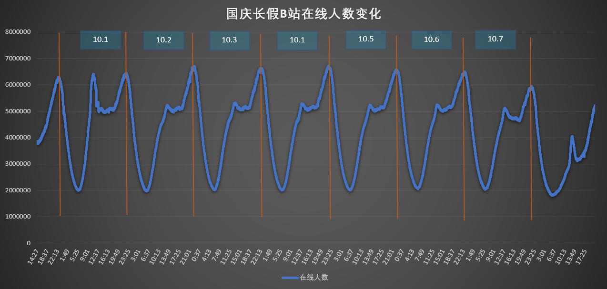
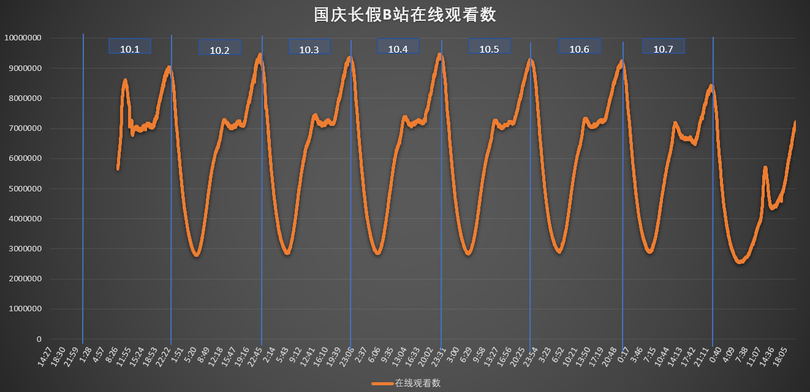

国庆期间想要统计一下bilibili网站的在线人数变化，写了一个简单的爬虫程序。主要是对https://api.bilibili.com/x/web-interface/online返回的参数进行分析，获取在线人数对应位置。程序关键点在于requests模块的使用。
具体步骤
1、网页中寻找数据元素对应接口
2、设置代理库
3、请求接口，json读取数据，获得当前在线人数
4、10次求平均
5、配置定时任务，每分钟执行一次
6、excel导出图表
最终结果

# !/usr/bin/env python3
# -*- coding: utf-8 -*-
import requests
import random
import json
import time
# ---------------------------------------------------------------------------------------
# 计算时间差,格式: 时分秒
def gettimediff(start, end):
seconds = (end - start).seconds
m, s = divmod(seconds, 60)
h, m = divmod(m, 60)
diff = ("%02d:%02d:%02d" % (h, m, s))
return diff
# ----------------------------------------------------------------------------------------------------------------------
# 返回一个随机的请求头 headers
def getheaders():
user_agent_list = [ \
"Mozilla/5.0 (Windows NT 6.1; WOW64) AppleWebKit/537.1 (KHTML, like Gecko) Chrome/22.0.1207.1 Safari/537.1" \
"Mozilla/5.0 (X11; CrOS i686 2268.111.0) AppleWebKit/536.11 (KHTML, like Gecko) Chrome/20.0.1132.57 Safari/536.11", \
"Mozilla/5.0 (Windows NT 6.1; WOW64) AppleWebKit/536.6 (KHTML, like Gecko) Chrome/20.0.1092.0 Safari/536.6", \
"Mozilla/5.0 (Windows NT 6.2) AppleWebKit/536.6 (KHTML, like Gecko) Chrome/20.0.1090.0 Safari/536.6", \
"Mozilla/5.0 (Windows NT 6.2; WOW64) AppleWebKit/537.1 (KHTML, like Gecko) Chrome/19.77.34.5 Safari/537.1", \
"Mozilla/5.0 (X11; Linux x86_64) AppleWebKit/536.5 (KHTML, like Gecko) Chrome/19.0.1084.9 Safari/536.5", \
"Mozilla/5.0 (Windows NT 6.0) AppleWebKit/536.5 (KHTML, like Gecko) Chrome/19.0.1084.36 Safari/536.5", \
"Mozilla/5.0 (Windows NT 6.1; WOW64) AppleWebKit/536.3 (KHTML, like Gecko) Chrome/19.0.1063.0 Safari/536.3", \
"Mozilla/5.0 (Windows NT 5.1) AppleWebKit/536.3 (KHTML, like Gecko) Chrome/19.0.1063.0 Safari/536.3", \
"Mozilla/5.0 (Macintosh; Intel Mac OS X 10_8_0) AppleWebKit/536.3 (KHTML, like Gecko) Chrome/19.0.1063.0 Safari/536.3", \
"Mozilla/5.0 (Windows NT 6.2) AppleWebKit/536.3 (KHTML, like Gecko) Chrome/19.0.1062.0 Safari/536.3", \
"Mozilla/5.0 (Windows NT 6.1; WOW64) AppleWebKit/536.3 (KHTML, like Gecko) Chrome/19.0.1062.0 Safari/536.3", \
"Mozilla/5.0 (Windows NT 6.2) AppleWebKit/536.3 (KHTML, like Gecko) Chrome/19.0.1061.1 Safari/536.3", \
"Mozilla/5.0 (Windows NT 6.1; WOW64) AppleWebKit/536.3 (KHTML, like Gecko) Chrome/19.0.1061.1 Safari/536.3", \
"Mozilla/5.0 (Windows NT 6.1) AppleWebKit/536.3 (KHTML, like Gecko) Chrome/19.0.1061.1 Safari/536.3", \
"Mozilla/5.0 (Windows NT 6.2) AppleWebKit/536.3 (KHTML, like Gecko) Chrome/19.0.1061.0 Safari/536.3", \
"Mozilla/5.0 (X11; Linux x86_64) AppleWebKit/535.24 (KHTML, like Gecko) Chrome/19.0.1055.1 Safari/535.24", \
"Mozilla/5.0 (Windows NT 6.2; WOW64) AppleWebKit/535.24 (KHTML, like Gecko) Chrome/19.0.1055.1 Safari/535.24"
]
UserAgent = random.choice(user_agent_list)
headers = {'User-Agent': UserAgent}
return headers
# -----------------------------------------------------检查ip是否可用---------------------
def checkip(targeturl, ip):
headers = getheaders() # 定制请求头
proxies = {ip.split(':')[0]: ip} # 代理ip
try:
response = requests.get(url=targeturl, proxies=proxies, headers=headers, timeout=5).status_code
if response == 200:
return True
else:
return False
except:
return False
# -------------------------------------------------------获取代理方法----------------------
def findip(): # ip类型,页码,目标url,存放ip的路径
url = 'https://api.bilibili.com/x/web-interface/online' # 配置url
headers = getheaders() # 定制请求头
callback = requests.get(url=url, headers=headers, timeout=10).text
data_json = json.loads(callback) # json格式读取返回值
web_online = data_json['data']['web_online'] # 获取在线人数
play_online = data_json['data']['play_online']
all_count = data_json['data']['all_count']
return web_online, play_online, all_count
if __name__ == "__main__":
num_sum = 0
play_sum = 0
count_sum = 0
time_now = time.strftime('%Y-%m-%d %H:%M:%S', time.localtime(time.time())) # 获取当前时间，格式%Y-%m-%d %H:%M:%S
for i in range(10): # 统计十次数据，求平均
num_sum = num_sum + findip()[0]
play_sum = play_sum + findip()[1]
count_sum = count_sum + findip()[2]
time.sleep(1)
num = num_sum / 10
play_online = play_sum / 10
count = count_sum / 10
with open('online_num.csv', 'a') as f: # 写入文件数据
f.write('%s,%s,%s,%s\n' % (time_now, num, play_online, count))
f.close()